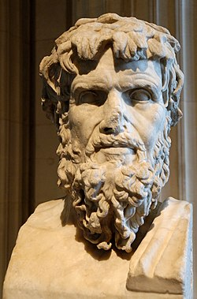

¡Felicidades!

Una actividad de reflexión histórica sobre las críticas de Celso al cristianismo

Celso fue un filósofo griego del siglo II que escribió una de las primeras críticas completas contra el cristianismo. Selecciona una palabra y luego su definición según lo que decía Celso. Luego responde, verdadero o falso. Si fallas 3 veces, el juego se reinicia. Suerte!!!